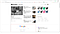

Because of google

Because I think it is worth and good for both the visitors and readers and all website owners to have always the door of Google at the bottom of all web pages produced and published into the internet for each of us to be able to search every time we want.

so this third-party application is for the benefits of visitors, readers, and website owners.
You can make it available by the type of visitor reader or user’s device type
This is a transparent experience layer well design to work on all websites like plug push.
what if we have the choice to choose the search engine we want